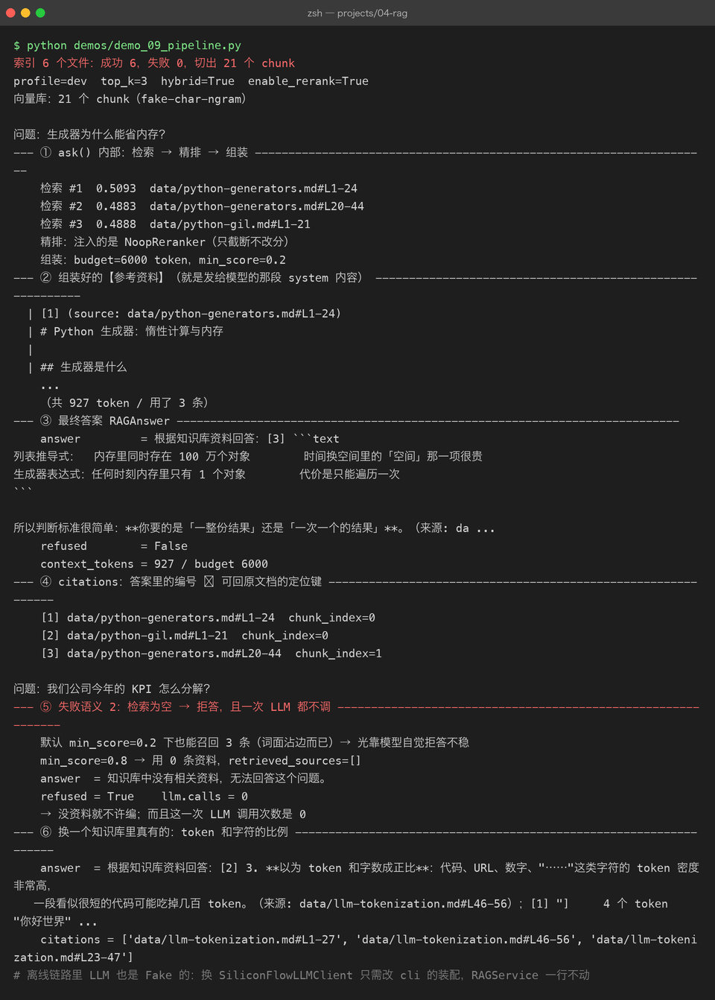
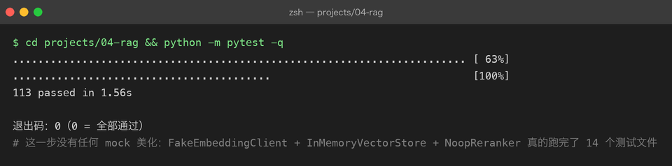

Project 04 — Chapter 09：RAG Pipeline【完整流水线】
状态：✅ 已成文（文档先行，作为 src/ 落地设计依据） 对应代码：
src/rag/pipeline.py+src/rag/service.py（代码落地时实现）
1. 本章要解决什么问题
Chapter 01-08 已经把所有零件造好了：BaseParser 解析文档、chunk_document 切分、BaseEmbeddingClient 向量化、BaseVectorStore 存储、Retriever 检索（支持 hybrid / MMR）、BaseReranker 重排、ContextAssembler 组装。
但零件散落在各自的章节里，互相怎么调用还没有定论：
你以为： RAG = 这些函数按顺序调用一遍，写个 main 就完事了
实际上： 这条链路天然分成两条完全不同的链——
一条是离线批处理（建索引），一条是在线服务（问答），
它们的触发时机、失败语义、性能要求全都不一样这两条链是：
离线索引链路（可以慢，可以定时跑）：
ingest(paths) → parse → chunk_document → embed → store
在线问答链路（每次请求都要快）：
ask(query) → retrieve → rerank → assemble → llm → answer + citations本章目标：
把 01-08 的零件串成两条完整链路，并定下配置、分层、失败语义——这就是 Personal RAG v1.0。
2. 为什么需要这个知识
数仓领域有一句老话：批处理（batch）与在线服务（serving）必须分离。Java 里 Spring Batch 跑夜间报表、Tomcat 提供在线 API，从来不会混在一个事务里；Python 里 RAG 的索引和问答也是同构关系。
分离的直接收益是失败语义可以分开定义：
索引失败： 不阻塞问答。用户照常用旧索引提问，后台记 WARNING，下次重跑
检索为空： 不进入 LLM。直接返回「知识库中没有相关资料」，不花一分钱 token
LLM 失败： 重试一次，仍失败则明确告知，不返回空字符串如果没有明确定义，实际写出来的代码往往是「任何一步挂了整个请求 500」，或者更糟——静默返回一个看起来正常、实则瞎编的答案。
另一个原因：把零件的调用顺序固化在两个入口类（IngestionPipeline / RAGService）里，Chapter 10 的评估就能只依赖 RAGService 的公开方法测整条链路，而不需要知道内部有几个零件。Java 里这就是「面向接口编程」：评估代码拿到的是一个黑盒，Python 里同样是这一个对象。
3. 核心概念
3.1 分层架构：RAG 只是「多了索引链路的 chat 应用」
呼应 P03 Chapter 09 的五层结构，P04 的分层是这样的：
┌──────────────────────────────────────────────────┐
│ 接入层 cli.py / api.py │ 复用 P03 的 FastAPI + SSE 模式
├──────────────────────────────────────────────────┤
│ 编排层 IngestionPipeline / RAGService │ 本章主角：串起两条链路
├──────────────────────────────────────────────────┤
│ 能力层 Retriever / BaseReranker / Assembler │ Ch05-08 的零件
├──────────────────────────────────────────────────┤
│ 模型层 BaseEmbeddingClient / DeepSeek / │ Ch03-04 的零件
│ BaseVectorStore │
├──────────────────────────────────────────────────┤
│ 数据层 BaseParser / chunk_document / Chunk │ Ch01-02 的零件
└──────────────────────────────────────────────────┘关键的心智模型：在线问答链路和 P03 的 chat 应用几乎一模一样（system + user → LLM → 回答），RAG 只多了两件事——前置的检索阶段（能力层）和一条离线索引链路。所以 P03 的 FastAPI + SSE、token 预算、结构化输出经验全部直接复用，不需要重新发明。
3.2 配置整合：frozen Settings + for_profile
沿用 P02/P03 定下的模式：配置不可变、按 profile 生成。RAG 比 chat 多了一组索引参数：
| 配置项 | 默认值 | 说明 |
|---|---|---|
chunk_size / chunk_overlap | 500 / 80 | Chapter 02 定下的切分参数 |
top_k | 5 | 检索召回条数（rerank 后交给组装） |
enable_hybrid | True | 是否启用混合检索 |
enable_rerank | True | 是否启用重排（离线测试时可关） |
min_score | 0.2 | 组装时的分数阈值 |
context_window / reserved_output | 64000 / 2048 | 预算计算（P03 Budget 思路） |
embedding_model | BAAI/bge-m3 | SiliconFlow 向量模型 |
@dataclass(frozen=True)
class RAGSettings:
chunk_size: int = 500
chunk_overlap: int = 80
top_k: int = 5
enable_hybrid: bool = True
enable_rerank: bool = True
context_window: int = 64_000
reserved_output: int = 2_048
@classmethod
def for_profile(cls, profile: str) -> "RAGSettings":
if profile == "test":
# 离线测试：关 rerank（不调外部 API），窗口收小逼出裁剪逻辑
return cls(enable_rerank=False, context_window=2_000, reserved_output=512)
return cls()frozen 的意义和 Java 里的不可变对象（record / builder 产出的 immutable config）一样：配置对象在多处传递时，不会中途被谁悄悄改掉。
3.3 失败语义：三种失败三种处理
1. 索引失败（某个文件解析报错 / embedding API 超时）
→ 捕获、记日志、跳过该文件继续处理其余文件；
整体失败时问答服务不受影响，旧索引照常可用
2. 检索为空（score 全部低于 min_score）
→ 不调 LLM，直接返回固定话术「知识库中没有相关资料」。
这既是省钱，更是防幻觉：模型手里没资料还硬答，必然瞎编
3. LLM 调用失败
→ 重试一次；仍失败则向用户报明确错误，绝不返回空字符串第 2 条值得单独强调：「不知道」是一个合法且必须优先输出的答案。判断「知识库里没有相关资料」不需要 LLM，用分数阈值就够了——这是在检索层就能做的决定，比让模型自己承认不知道可靠得多。

4. 动手实现（设计稿）
以下代码将在 src/rag/pipeline.py 和 src/rag/service.py 落地，这里先当设计稿读。
"""离线索引链路：ingest(paths) → parse → chunk_document → embed → store"""
import logging
from dataclasses import dataclass
from pathlib import Path
from rag.chunker import chunk_document
from rag.embedding_client import BaseEmbeddingClient
from rag.ingestion import BaseParser
from rag.vector_store import BaseVectorStore
logger = logging.getLogger(__name__)
@dataclass(frozen=True)
class IngestReport:
files_total: int
files_ok: int
files_failed: list[str]
chunks_stored: int
class IngestionPipeline:
def __init__(
self,
parsers: list[BaseParser],
embedding_client: BaseEmbeddingClient,
vector_store: BaseVectorStore,
) -> None:
self._parsers = parsers
self._embedding = embedding_client
self._store = vector_store
def ingest(self, paths: list[Path], size: int = 500, overlap: int = 80) -> IngestReport:
failed: list[str] = []
all_chunks = []
for path in paths:
parser = self._find_parser(path)
if parser is None:
failed.append(f"{path}: 无可用 parser")
continue
try:
doc = parser.parse(path)
all_chunks.extend(chunk_document(doc, size=size, overlap=overlap))
except Exception:
# 单文件失败不拖垮整批：记日志、跳过、继续
logger.warning("解析失败，跳过文件: %s", path, exc_info=True)
failed.append(str(path))
vectors = self._embedding.embed([c.text for c in all_chunks])
for chunk, vec in zip(all_chunks, vectors):
# 主键 = chunk_id（内容哈希前缀，Ch01/Ch02 定的）→ 重复 ingest 幂等
self._store.upsert(
id=chunk.chunk_id,
vector=vec,
text=chunk.text,
metadata=chunk.metadata,
)
return IngestReport(
files_total=len(paths),
files_ok=len(paths) - len(failed),
files_failed=failed,
chunks_stored=len(all_chunks),
)
def _find_parser(self, path: Path) -> BaseParser | None:
return next((p for p in self._parsers if p.supports(path)), None)"""在线问答链路：ask(query) → retrieve → rerank → assemble → llm → answer"""
import logging
from dataclasses import dataclass
from rag.assembly import AssembledContext, ContextAssembler, RAG_SYSTEM_RULES
logger = logging.getLogger(__name__)
NO_RESULT_ANSWER = "知识库中没有相关资料，无法回答这个问题。"
@dataclass(frozen=True)
class RAGAnswer:
answer: str
citations: list # AssembledContext.citations
context_tokens: int
retrieved_sources: list[str] # rerank 后的来源序列（评估用，Ch10 依赖）
class RAGService:
def __init__(self, retriever, reranker, assembler: ContextAssembler, llm) -> None:
self._retriever = retriever
self._reranker = reranker
self._assembler = assembler
self._llm = llm
def ask(self, query: str, budget: int) -> RAGAnswer:
scored = self._retriever.retrieve(query, top_k=10, mode="hybrid", mmr=True)
if self._reranker is not None:
scored = self._reranker.rerank(query, scored)[:5] # 精排出 top5
ctx: AssembledContext = self._assembler.build(query, scored, budget)
if not ctx.used_chunks: # 失败语义 2
return RAGAnswer(NO_RESULT_ANSWER, [], ctx.context_tokens, [])
messages = [
{"role": "system", "content": RAG_SYSTEM_RULES + "【参考资料】\n" + ctx.context_text},
{"role": "user", "content": query},
]
answer = self._llm.chat(messages)
return RAGAnswer(
answer=answer,
citations=ctx.citations,
context_tokens=ctx.context_tokens,
retrieved_sources=[sc.chunk.metadata.get("source", "") for sc in ctx.used_chunks],
)接入层的组装只发生在启动时一次（cli.py / api.py）：按 profile 读 RAGSettings，enable_rerank 为 True 时注入 SiliconFlowReranker、否则注入 NoopReranker，LLM 用 DeepSeek 的 deepseek-chat（用户自备 API Key）。之后每个请求只调 service.ask(query, budget)。
5. 踩坑清单
坑 1：索引与查询用了不同的 embedding 模型
现象： 换了一版 embedding 模型后（只改了代码没重建索引），
检索结果完全不对，top1 的相似度也低得离谱
原因： 两个模型把文本映射到不同的向量空间，跨空间算余弦相似度没有意义
做法： Chapter 03 的防线在这里兑现——collection metadata 里记录
embedding 模型名，查询前校验一致；不一致就全量重建索引
（全库作废，没有增量方案）坑 2：增量索引重复入库
现象： 同一批文档跑了两次 ingest，向量库条目翻倍，
检索结果里同一段话出现两遍，浪费 Context 预算（呼应 Ch08 坑 1）
原因： 用时间戳或自增 id 当主键，同一内容每次入库都是「新条目」
做法： 主键用 chunk_id（内容哈希前缀 + 块序号，Ch01/Ch02 已定），
配合 store 的 upsert 天然幂等——这和 Java 里
「业务键 + UPSERT 替代裸 INSERT」是同一个思路坑 3：流式输出时 citations 发早了
现象： SSE 场景下，前端在正文开始前就收到了 citations，
点引用发现内容对不上；或者正文完了 citations 永远不来
原因： citations 由 AssembledContext 产生，在 LLM 开始生成之前就有了，
但「本次回答实际引用了哪些编号」要等模型输出完才知道
做法： 流式协议里 citations 作为最后一个事件、在 done 事件前补发；
若要精确到「实际被引用的编号」，需在流结束后对全文
提取 [n] 再过滤 citations坑 4：测试连着真实 API 跑全链路
现象： 想验证 pipeline 逻辑，却每次测试都真实调 SiliconFlow + DeepSeek，
慢、花钱、断网就红
原因： 没有用离线替身
做法： test profile 下固定使用 FakeEmbeddingClient（确定性向量）
+ InMemoryVectorStore + NoopReranker，
全链路（索引 → 检索 → 组装 → 拒答）不碰任何外部 API；
LLM 层用录制回放或假实现。这正是 Ch03/Ch07 预留 Fake 类的原因
6. 自检清单
- [ ] 能画出五层架构图，并说清「RAG = 多了索引链路的 chat 应用」
- [ ] 能不看书写出两条链路的入口：
IngestionPipeline.ingest(paths)与RAGService.ask(query) - [ ]
RAGSettings.for_profile("test")下的全链路测试完全不碰外部 API - [ ] 检索为空时直接拒答，不调 LLM
- [ ] 单文件解析失败不阻塞整批索引；重复 ingest 不会重复入库
- [ ] 知道 embedding 模型变更必须重建索引，且 store 里记录了模型名
上一章：08-context-assembly.md 下一章：10-rag-evaluation.md —— 流水线跑通了，但「感觉变好了」不算数，这一章教你用数字说话。